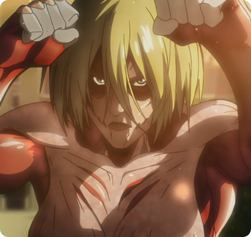

Titãs Originais
Os Nove Titãs (九 つ の 巨人 Kokonotsu no Kyojin?) são nove poderes de Titãs que foram passados por Eldianos, Súditos de Ymir por quase 2.000 anos após a morte de Ymir Fritz, sendo que cada um deles tem seu próprio nome. Eles são chamados de Titã Fundador, Titã de Ataque, Titã Colossal, Titã Fêmea, Titã Blindado, Titã Bestial, Titã Mandíbula, Titã Quadrúpede e Titã Martelo de Guerra.

Titã Colossal

Titã Fundador

Titã Bestial

Titã de Ataque
- 
Titã Fêmea
-
Titã Martelo de Guerra

Titã Cargueiro

Titã Mardíbula
-
Titã Blindado